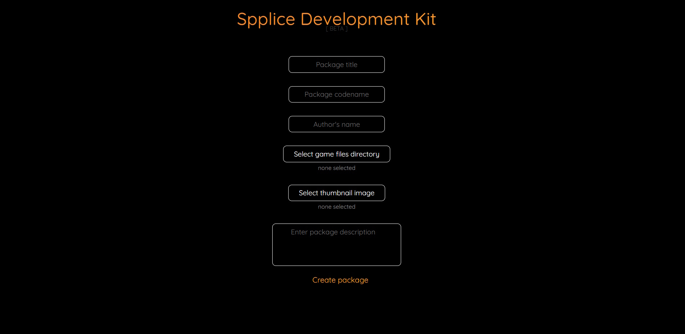

Regardless of if you're making a map pack, a simple VScript hack or a
full-blown mod, Spplice lets you focus on your projects without worrying
about getting them to your players.
Spplice works by automatically extracting pre-packaged project files,
which can then be loaded into Portal 2 from a single click in the app.
These packages can be loaded from a local file or fetched from an
online repository - more on this later. The tool for creating these
packages is built into Spplice 2.
Nope! Chances are, you've already got the right stuff for a Spplice package. Any project with the file structure of the Portal 2 game files is (probably) already valid for packaging. As long as you don't need to override anything in the "update" folder, you should be fine. So if you can run your mod from within, for example, "portal2_dlc3", you're good to go.
Keep in mind that package generation is still a beta feature of Spplice 2, but it should be stable enough for most cases. To access this feature, open the Spplice settings and click on the title text 5 times. This will open the Spplice Development Kit, which should be a simple-to-use utility for creating package files.

You can test it out by clicking the "+" icon on the Spplice home page and
from there clicking "Select package file". If everything works as expected,
you can already begin distributing your mod with this file alone. However,
as teased previously, Spplice has a global repository. If you want to
submit your package for review and get a chance at being featured there,
send an email to p2r3@p2r3.com.
You probably also noticed that Spplice provides an option for adding custom
repositories. These are a bit tricky to set up, but can be much nicer for
distribution and live updates. We're not going to cover how to create one
here, but you should be able to figure that out by following the format of
the global repository.